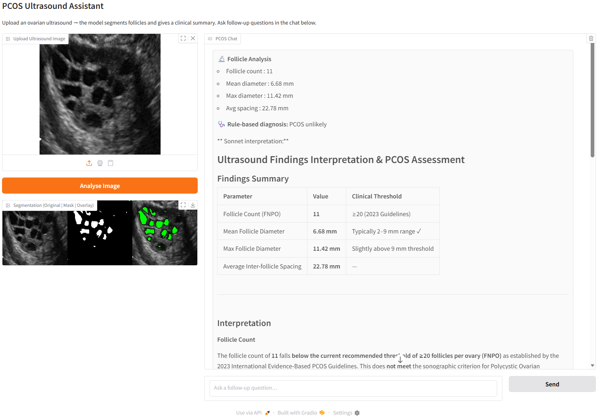
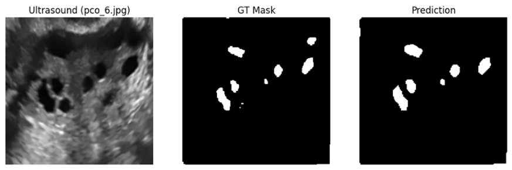

An end-to-end deep learning pipeline — from raw ovarian ultrasound to evidence-grounded clinical reports — combining transformer segmentation, weakly supervised learning, and retrieval-augmented generation.
Polycystic Ovary Syndrome (PCOS) — recently renamed Polyendocrine Metabolic Ovarian Syndrome (PMOS) — is one of the most prevalent endocrine disorders affecting women of reproductive age. It affects an estimated 8–13% of the global female population, yet up to 70% remain undiagnosed.
In India alone, approximately 26 million women of reproductive age are affected. Untreated PCOS carries serious downstream consequences: infertility, insulin resistance, type 2 diabetes, cardiovascular disease, and elevated cancer risk.
Diagnosis currently requires manual review of ovarian ultrasound images — a laborious, time-consuming task subject to significant inter-observer variability. A skilled radiologist must individually identify, count, and measure each follicle in the presence of speckle noise, low contrast, follicle overlap, and acoustic artefacts.
The Rotterdam 2003 consensus criteria require ≥12 follicles per ovary measuring 2–9 mm in diameter; updated 2023 ESHRE guidelines raise this to ≥20 follicles with modern high-sensitivity probes. This directly motivates automated, computer-assisted diagnostic support.
The proposed system connects raw pixel data to clinician-interpretable, evidence-grounded diagnostic reports through seven interconnected stages — each addressing a distinct clinical or technical challenge.
3,349 unhealthy + 1,468 healthy ultrasound instances, annotated by experienced gynaecologists. Two-level label hierarchy mirrors clinical workflow: normal vs. abnormal, then PCOM visible vs. not visible.
12,680 images from multiple public repositories (6,784 PCOS / 5,000 non-PCOS), broadening training diversity. Plus a 54-image specialist-annotated set (14 PCOS / 40 non-PCOS) as an independent quality reference.
1,875 breast ultrasound images (benign, malignant, normal) with expert-annotated binary ground-truth masks — used to validate that HMSF architectural contributions are domain-agnostic beyond ovarian imaging.
| Method | Approach | Selected |
|---|---|---|
| Non-Local Means (NLM) | Patch-level weighted averaging — preserves textural detail while suppressing random noise | ✓ Selected |
| SRAD | PDE-based edge-sensitive diffusion with gradient-dependent coefficients | — |
| Wavelet Thresholding | Multi-scale coefficient suppression below an adaptive level | — |
| U-Net Denoising | Supervised deep denoiser learning residual mapping from noisy inputs | — |
The central technical contribution: a Hierarchical Multi-Scale Fusion network designed specifically to overcome the limitations of existing models on ovarian ultrasound — where speckle noise, low contrast, and densely packed follicles challenge all general-purpose approaches.
A Mix Transformer B3 backbone pre-trained on ImageNet-1K. Employs overlapping patch embeddings and efficient self-attention with sequence reduction, producing five progressively downsampled feature maps (E1: 128×128×32 → E5: 8×8×512). Early stages capture fine spatial details like follicle edges; deep stages capture abstract semantic representations of ovarian structure.
Unlike standard U-Net (one-to-one skip connections), HMSF replaces each skip with cross-scale aggregation: at decoder level k, features from all four encoder stages are spatially resized, channel-aligned, summed, and normalised into a unified representation Hk. This simultaneously resolves two failure modes — fragmented boundaries (corrected by fine spatial detail from shallow stages) and missed small follicles (corrected by global semantic context from deep stages).
The deepest encoder feature E5 is processed through parallel dilated convolutions at rates r ∈ {1, 6, 12, 18} alongside global average pooling, capturing context at multiple receptive field scales simultaneously — addressing the clinical challenge of variable follicle size (2–10 mm) within the same image.
Three complementary terms: Binary Cross-Entropy (pixel-wise supervision), Dice Loss (optimising mask overlap directly, mitigating class imbalance), and Tversky Loss with βT > αT to penalise false negatives more heavily than false positives — ensuring small peripheral follicles, the most diagnostically critical structures, are not missed.
Three general-purpose models were benchmarked before HMSF development to establish performance baselines:
The knowledge base covers 8 clinical topic areas: Rotterdam / ESHRE diagnostic criteria, insulin resistance, lifestyle interventions, physical activity, mental health comorbidities, molecular mechanisms, pharmacological management, and obesity. All generated reports include source-level citations at the document and page level — zero hallucination on clinical threshold values across all tested queries.

| Component | Metric | Value | Context |
|---|---|---|---|
| Baseline Clf. Stage 1 | Accuracy | 90.1% | Normal vs. Abnormal |
| Baseline Clf. Stage 1 | Recall | 96.0% | High-sensitivity screening |
| Baseline Clf. Stage 2 | Accuracy | 93.9% | PCOM visible vs. not visible |
| Baseline Clf. Stage 2 | Recall | 100% | Perfect sensitivity — zero FN |
| SAM (baseline) | Dice | 0.50 | Coarse masks, merged follicles |
| MedSAM (baseline) | Dice | 0.34 | Poor ultrasound domain transfer |
| YOLOv8 (baseline) | Dice | 0.35 | Detection bias; misses small follicles |
| HMSF — PCOSGen (batch) | Dice | 0.71 | Mean across training batch |
| HMSF — PCOSGen (sample) | Dice | 0.82 | +64% vs. SAM |
| HMSF — BUSBRA (batch) | Dice | 0.88 | Expert-annotated ground truth |
| HMSF — BUSBRA (sample) | Dice | 0.96 | Generalisation confirmed |

| Parameter | Extracted Value | Rotterdam 2003 | 2023 ESHRE | Assessment |
|---|---|---|---|---|
| Follicle count | 12 | ≥12 | ≥20 | Borderline |
| Mean follicle diameter | 8.3 mm | 2–9 mm | 2–9 mm | ✓ Within range |
| Max follicle diameter | 15.2 mm | — | — | ⚠ Possible dominant follicle |
| Avg inter-follicle spacing | 36.2 px | — | — | "String of pearls" distribution confirmed |
| Total follicular area | 4684.0 px | — | — | Follicular load metric |
Rule-based diagnosis output: "PCOS possible — older Rotterdam threshold (n ≥ 12) met; 2023 ESHRE threshold (n ≥ 20) not met. Dominant follicle flagged. Ultrasound morphology alone insufficient for PCOS diagnosis — clinical and biochemical correlation advised."
A systematic review of peer-reviewed computational studies published 2021–2025 across IEEE Xplore, PubMed/MEDLINE, Scopus, Google Scholar, and SpringerLink. A clear performance gradient aligns with methodological sophistication.
| Study / Method | Key Result | Limitation |
|---|---|---|
| Morphological ops (UKM) | Dice ≤ 0.78; Sensitivity 54–74% | Parameter-sensitive; poor with overlapping follicles |
| Otsu + Chan-Vese (hybrid) | Dice 0.78 vs 0.67 (baseline); +20pp sensitivity | Capillary vessels cause false positives |
| Study / Method | Accuracy | Dataset |
|---|---|---|
| GIST-MDR + SVM | 93.82% | Kaggle PCOS |
| BM3D + RF (CAD pipeline) | 86.3% | 187 transvaginal images |
| CNN descriptor (transvaginal) | ~95.4% | Transvaginal US |
| Study / Method | Accuracy | Notable Feature |
|---|---|---|
| CNN benchmark (ResNet, VGG) | 95.4% | Comparative baseline across architectures |
| CNN-RNN Attention (temporal) | 96% / 97% sensitivity | Unique temporal modelling across scan frames |
| CystNet (InceptionV3 + Autoencoder) | 97.75% (RF) | 3-dataset validation; supervised + unsupervised features |
| ARU-Net (Attention Residual U-Net) | 97.65% | USOVA3D benchmark; structured ablation |
| Improved U-Net (Octave Conv) | 88.42% | Domain-agnostic architectural innovations |
| Study / Method | Accuracy / IoU | Key Contribution |
|---|---|---|
| QEI-SAM (ESRGAN + SAM + VGG-19) | 99.31% / IoU 0.96 | 13.87pp gain from ESRGAN preprocessing alone |
| YOLO v11 + Pali-Gemma v2 | Multi-dataset | Only study generating severity-graded clinical reports |
| Att-UNet + EfficientNet B6 + PySpark | 98.12% | Multi-modal; only study addressing big-data scalability |
| MP-YOLO | IoU 94.63% | Multi-pooling for variable follicle size detection |
28 peer-reviewed studies (2021–25) reviewed across a four-tier methodological taxonomy. Identified preprocessing quality as a primary — and consistently underappreciated — performance determinant.
Three datasets consolidated into 20,294 balanced images. NLM denoising selected through systematic comparison as optimal speckle suppression strategy preserving fine follicular boundary detail.
ResNet-50 + DenseNet-201 + InceptionV3 ensemble achieving Stage 1 recall 0.96 and Stage 2 recall 1.00 — clinically reliable coarse screening mirroring the actual diagnostic workflow.
Full annotation burden reduced to a single interactive exemplar. Seed-point region growing + one-shot U-Net generates dataset-scale pseudo-masks, making follicle segmentation tractable without full radiologist labelling.
MiT-B3 + cross-scale HMSF fusion + ASPP. Dice 0.82 on ovarian US (64% improvement over SAM), Dice 0.88–0.96 on breast US (BUSBRA). Domain-agnostic generalisation confirmed without architectural modification.
Evidence-based knowledge base covering 8 clinical topics + Claude Sonnet backbone. Source-attributed reports at document and page level. No hallucinated clinical thresholds across all tested queries.
| Limitation | Impact | Mitigation Path |
|---|---|---|
| Pseudo-label dependency | True ceiling vs. expert annotation unknown | Radiologist-annotated held-out test set (future work) |
| Fixed pixel calibration | Diameter accuracy varies across probe depths | DICOM metadata integration |
| Single-ovary analysis | Clinical PCOS requires bilateral assessment | Paired-image workflow extension |
| No prospective validation | Real-world utility unconfirmed | Prospective clinical trial (primary next step) |
Radiologist-annotated ground truth + institutional ethics approval + DICOM integration + comparison against clinician diagnoses in live workflow.
Integrate hormonal assays, menstrual history, and anthropometric data via cross-modal attention — expected to substantially reduce false-positive burden at screening.
Extend HMSF to 3D ultrasound stacks for direct ovarian volume computation + follicle count across the full extent — eliminating dependence on 2D cross-sections.